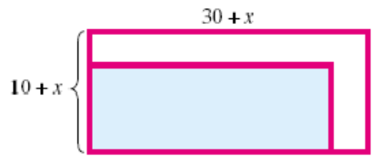

In Section 5.1, we learned to simplify the sum of two algebraic expressions by combining like terms. In this section we see how to multiply algebraic expressions.
Recall that we can simplify a product such as \(3(2x)\) because
In a similar way, we can simplify the product \((3b)(4b)\) by applying the commutative and associative properties:
\begin{equation*}
(3b)(4b) = 3 \cdot b \cdot 4 \cdot b = 3 \cdot 4 \cdot b \cdot b = (3 \cdot 4) \cdot (b \cdot b) = 12b^2
\end{equation*}
Look Closer.
You can convince yourself that \((3b)(4b)\) is equivalent to \(12b^2\) by substituting some values for \(b\text{;}\) for example, if \(b=\alert{2}\text{,}\) then
The commutative and associative properties tell us that we can multiply the factors of a product in any order.
Example5.27.
Simplify the product or power.
\(\displaystyle (5a)(-3a)\)
\(\displaystyle (2x)^3\)
\(\displaystyle (xy^2)(4x^2)\)
Solution.
We apply the commutative property:
\begin{equation*}
(5a)(-3a) = 5(-3) \cdot a \cdot a = -15a^2
\end{equation*}
To cube an expression means to multiply three copies of the expression together:
\begin{equation*}
(2x)^3 = (2x)(2x)(2x) = 2 \cdot 2 \cdot 2 \cdot x \cdot x \cdot x = 8x^3
\end{equation*}
We rearrange the factors to group each variable together:
\begin{equation*}
(xy^2)(4x^2) = x \cdot y \cdot y \cdot 4 \cdot x \cdot x = 4 \cdot x \cdot x \cdot x \cdot y \cdot y = 4x^3y^2
\end{equation*}
Caution5.28.
When we add like terms, we do not change the variable in the terms; we combine the coefficients. For example,
\begin{equation*}
3a+2a=5a
\end{equation*}
When we multiply expressions, we multiply the coefficients and we multiply the variables:
\begin{equation*}
3a(2a) = 3(2) \cdot a \cdot a = 6a^2
\end{equation*}
Reading QuestionsReading Questions
1.
Explain the difference between \(5x-2x\) and \(5x(-2x)\text{.}\)
Answer.
The first expression is a sum and the second is a product.
SubsectionUsing the Distributive Law
We can use the areas of rectangles to investigate products of algebraic expressions. Recall that we find the area of a rectangle by multiplying its length times its width, \(A=lw\text{.}\) We have already used rectangles to visualize the distributive law. Here are some examples.
Example5.29.
Calculate the area of the rectangle by adding the areas of each piece. Then use the distributive law to find the product of the algebraic expressions.
\(\blert{\text{Area} = 15x+20}\)
\(\displaystyle 5(3x+4)=5(3x)+5(4) = 15x + 20\)
\(\blert{\text{Area} = 2x^2+18x}\)
\(\displaystyle 2x(x+9)=2x(x)+2x(9)=2x^2+18x\)
\(\blert{\text{Area} = 12b^2+21b}\)
\(\displaystyle 3b(4b+7)=3b(4b)+3b(7)=12b^2+21b\)
Reading QuestionsReading Questions
2.
State the distributive law, and explain what it means.
Answer.
\(a(b+c)=ab+ac~~~\)"Distribute" the multiplication to each term inside parentheses.
At this stage it will be helpful to introduce some terminology.
Algebraic Expressions.
An algebraic expression with only one term, such as \(2x^3\text{,}\) is called a monomial.
An expression with two terms, such as \(x^2-16\text{,}\) is called a binomial.
An expression with three terms is a trinomial.
The expression \(ax^2+bx+c\) is thus called a quadratic trinomial, because it involves the square of the variable.
Caution5.30.
Notice the difference between \((3a)(2a)\) and \(3a(2+a)\text{:}\)
\((3a)(2a)\) is the product of two monomials, and we use the commutative property to simplify it:
\begin{equation*}
(3a)(2a)= 3 \cdot a \cdot 2 \cdot a =3 \cdot 2 \cdot a \cdot a = 6a^2
\end{equation*}
\(3a(2+a)\) is the product of a monomial and a binomial, and we use the distributive law to simplify it:
Explain the terms monomial, binomial, and trinomial.
Answer.
Having one term, two terms, or three terms.
SubsectionMultiplying Binomials
Consider the rectangle shown at right. As you can see, it is divided into four smaller rectangles. You can verify that we get the same answer when we compute its area in two different ways: We can add up the areas of the four smaller rectangles, or we can find the length and width of the entire large rectangle and then find their product:
Our goal in this Lesson is to understand products of binomials. We can use rectangles to illustrate, or model, the product of two binomials. The rectangles do not have to be drawn exactly to scale; they are merely tools for visualizing products. With a small stretch of the imagination, we can use rectangles to represent negative numbers as well.
Example5.31.
Use a rectangle to represent the product \((x-4)(x+6)\text{.}\)
Write the product as a quadratic trinomial.
Solution.
We let the first factor, \((x-4)\text{,}\) represent the width of the rectangle, and the second factor, \((x+6)\text{,}\) represent its length.
We find the area of each sub-rectangle, as shown in the figure. Then we add the areas together.
We say that \((x+6)(x-4)\) is the factored form of the product, and \(x^2+2x-24\) is the expanded form.
Reading QuestionsReading Questions
4.
When we use a rectangle to model the product of two binomials, what do the two binomials represent? What does their product represent?
Answer.
The lengths of the sides; the area of the rectangle
SubsectionThe Four Terms in a Binomial Product
Using a rectangle to multiply binomials illustrates how the distributive law works. Analyzing the rectangle method will help us in a later Lesson, when we reverse the process to factor a quadratic trinomial. Let us take a closer look at the example above.
Look Closer.
In Example5.31 we computed the product \((x-4)(x+6)\text{.}\) The top row of the rectangle corresponds to
\begin{equation*}
x(x+6)=x^2+6x
\end{equation*}
and the bottom row corresponds to
\begin{equation*}
-4(x+6)=-4x-24
\end{equation*}
Thus, we multiply each term of the first binomial by each term of the second binomial, resulting in four multiplications in all:
Use the distributive law to find the products. Illustrate each product as the area of a rectangle.
\(\displaystyle 2a(6a-5)\)
\(\displaystyle -4v(2v-3)\)
\(\displaystyle -5x(x^2-3x+2)\)
\(\displaystyle -3y(4y^2-2y+2)\)
2.
The City Council plans to install a 10-foot by 30-foot reflecting pool in front of City Hall. When the cost estimate comes in, they realize they can afford to enlarge the pool. They decide to increase both the length and the width by \(x\) feet. Write an equation for the new area, \(A\text{,}\) of the pool in terms of \(x\text{.}\)
Look at the drawing of the pool. Both dimensions of the original pool have been increased by \(x\text{.}\) The area of the enlarged pool is thus
\begin{align*}
A \amp = \text{length} \times \text{width}\\
\amp =
\end{align*}

We can partition the new pool into four sub-rectangles and compute the area of each. Adding these areas give us the following expression for the area of the new pool.
\begin{align*}
A \amp = \hphantom{0000000000} \amp \amp \blert{\text{Combine like terms.}}\\
\amp =
\end{align*}
The two expressions for the area are equivalent. Write an equation for this fact.
3.
Write the area of each rectangle in two different ways:as the sum of four small areas, and then as one large rectangle, using the formula